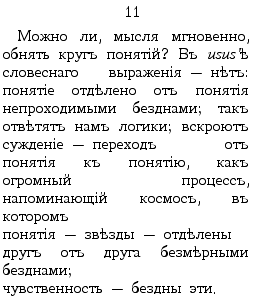
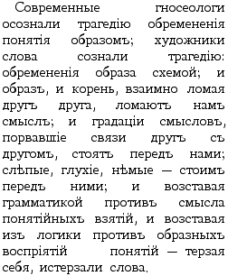
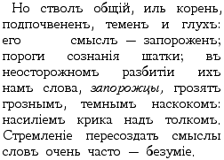
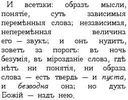

Glossolalia (Section 11)

Is it possible, thinking at any instant, to embrace the circle of concepts? In usus there is no -- verbal expression: one concept is separated from another concept by impassible abysses; that is how logicians will reply to us; they will reveal the judgements -- that the transfer from concept to concept, is like an enormous process, reminding one of the cosmos, in which concepts are -- stars -- separated one from another by immeasurable abysses; these abysses are -- perception.

Contemporary gnoseologists have recognized the tragedy of burdening concepts with an image; artists of the word have acknowledged the tragedy: of burdening the image with a schema; and the image, and the root, as they mutually destroy one another, destroy for us the meaning; and gradations of meanings, having torn apart the ties between one another, stand before us; blind, deaf, dumb -- we stand before them; and rising up with grammar against the meaning of conceptual graspings, and arising out of logic against imaged perceptions of concepts -- as we torment ourselves, we tormented to death the words.

But the common shaft, or the root, is in the subsoil, dark and deaf; its meaning is -- beyond the threshold; the thresholds of consciousness are shaky; in the incautious destruction of them words for us, are Zaporozhen thrashers, who threaten a threatening, dark collision: by the force of a scream over good sense. The striving to recreate the meanings of words is very often -- madness.

And even so: the image of a thought, the concept, are dependent alternating words; its independent, unalterable magnificence is -- sound; and it compels us, it calls us beyond the threshold: into a night of madness, into the universe of the word, where there is neither concept, nor an image of the word -- there is the firmament -- and it is void, and without form; but the spirit of God is -- upon it.